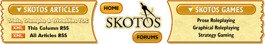

|
Another Postcard from Indianapolisby Shannon Appelcline Dear Friends, I'd meant to send this missive off last week, but I'm still getting back into the swing of things after a week away from the office in Indianapolis, then a few days away from the office to recover. This week has been the first one approaching any type of normalcy. In any case, as you no doubt guessed from the postmark, I was in Indianapolis again two weeks ago, and that can only mean one thing. GenCon. The most exhausting four days in gaming. I of course flew there, and I always find plane trips a bit odd. You travel through your own, familiar environment, then enter a tiny container which you reside in for an interminable amount of time. When you suddenly emerge from the other side the world has changed: it's hotter or colder, it's earlier or later, it's more humid or less. I suppose the abrupt transveral from one world to another is not unlike logging into an online game. We go to GenCon to meet up with our players, touch bases, and generally remind ourselves that even though we work in our individual offices, we are still part of a vast online community. However we also have another purpose for GenCon: advertisement. Advertising SkotosAs was the case last year, we had our own booth at GenCon. It was a combination RPGnet/Skotos booth, but much more Skotos than RPGnet. RPGnet really doesn't need much advertisement at the con, because it pretty much advertises itself. Since we helped the site out from its legal difficulties, and starting paying attention to it and slowly revamping things, the site has been steadily growing. We usually have an RPGnet sign at the booth to remind people that we're there, and to chat with any members who want to talk, but RPGnet alone wouldn't be worth attending the con for. Skotos, however, we push heavily. This year we gave out a couple of different general Skotos fliers, a Marrach flier, Castle Marrach & The Eternal City Player's Guides, and Lovecraft Country comics. This sort of giveaway is always a delicate thing. On the one hand you want to get the word out to as many people as possible, but on the other hand you don't particularly want to toss out 32-48 page books to people who will just throw them away. At various times in the con we only gave out the guides to the most interested people and handed them out like candy, mainly depending on our assessment of the current supplies. We ran out of just about everything Sunday afternoon, the last day of the 'con, so I'd say we did fine (because we didn't want to ship most of the books back). To a certain extent this sort of advertising back-and-forth is a microcosm of marketing in general. You want to direct your marketing to the best people, but if you limit yourself too much, you'll only be able to tell a few people about your product. Or, to put it another way, marketing is black magic. Our big hit for the con was our Lovecraft Country comic. We gave away something like 1400, but only to people who bought Lovecraft merchandise from one of our friends (Chaosium, Pegasus Spiele, Midnight Syndicate, Fantasy Flight Games, Atlas Games) or who answered a few questions from our Quiz of Cthulhu. This was a set of five questions about Lovecraft & Cthulhu that proved to be a great hook. It drew people into our booth and also gave our booth volunteers a good starting point for any conversations with GenCon attendees. Better, it self-selected people to give our comic too. If they felt unable to take our quiz, they probably wouldn't have been interested in our online game anyway. Self-selection is another pretty important idea in marketing; if you do it right, you optimize the people that you're spending time, energy, and money actually marketing to. As for the comic, it looks like we may be doing a bit more with it. I'd always envisioned that first issue as a standalone, but now I've now started the script for #2 and we're going to see if we can really publish it. The trick will be the art, and seeing if we can get it done in a continuing, and much more rapid basis in the future, but that's a problem for another day, as there has to be a story first! (And the story is going to be a problem all its own, as I need to figure out an arc and how to press forward from my singleton tale.) Playing CthulhuLest you think the con was all work, there was a bit of fun too. On Friday night, two of the Lovecraft Country leads ran a Call of Cthulhu version of "In the Tomb of the Desert God" for us. I played Carlton Fletcher, the missing brother from my aforementioned comic book, and by the end of the session I'd indeed gone missing. It was an interesting session. We had two gamemasters, and about ten players, some of which hadn't done tabletop RPing before. As such it ended up playing somewhere between a LARP and a traditional RPG. I had a great time really RPing Carlton as a hapless yet good-natured diletantte, and overall it reminded me of how close our online games really are to traditional roleplaying, because I could have had much the same experience in an online venue (minus, perhaps, the visceral laughter occasionally elicited by my buffoonery). I wish we could better get the word out that our games really are traditional RPs available in an online venue. I felt like we got really good response at GenCon this year, but I did get an occasional up-turned nose at the idea of online games. Perhaps this demographic is changing, however, as an increasing number of people are plugged in to the Internet. For the future I'll just have to remember how close our genres lie, and how useful discussion of the tabletop RP genre can thus be. SincerelyI feel like my second trip to Indianapolis didn't offer up any truly illuminating insights, but at the same time it helped remind me of some of the nuts and bolts. Players, roleplaying, and marketing. They're the heart of our company, and the heart of our game. Sincerely, [ <— #172: Balance & Consistency in Game Design | #174: On Blogs: The Ascendance of the Form —> ] Miniseries ...
|